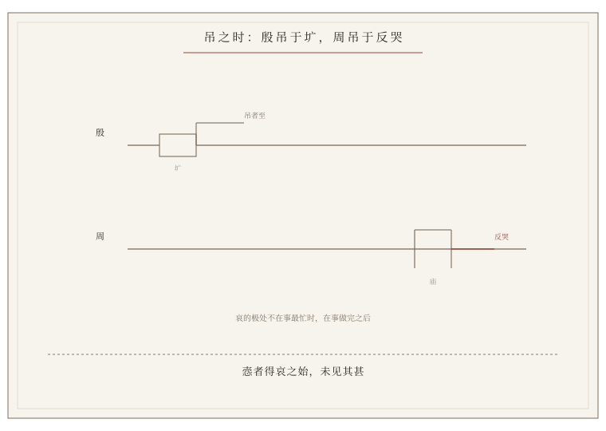

檀弓下 · 四·二十六 · 第 351 课
反哭之吊也，哀之至也。反而亡焉，失之矣，于是为甚。殷既封而吊，周反哭而吊。
说什么事：反哭之时来吊，是因为哀在这一刻到了极处。回来而人不在了，这才叫「失」，至此为最痛。所以殷人在下棺时吊，周人在反哭时吊。
落在哪一层：以「时」量吊。论「吊要在最痛的那一刻到」。
为何编在此位：上节论哭之地，此节论吊之时。地定而后时定。
【经】反哭之弔也，哀之至也。反而亡焉，失之矣，於是為甚。殷既封而弔，周反哭而弔。
【注】封当为窆，窆，下棺也。
【疏】知非既封土为坟者，以《既夕礼》「实土三，主人拜乡人，乃反哭」。周既如此，明殷亦然。且殷既不为坟，故知封当为窆。孔子曰：「殷已悫，吾从周。」悫者，得哀之始，未见其甚。／庙是亲之平生行礼之处，今反哭於庙，思想其亲而不见，故悲哀为甚。壙者，非亲存所在之处，今柩暂来至此，始有悲哀，未是甚极。今吊者於此而来，哀情质悫，故云「悫」也。
反哭 葬毕返庙而哭。
反而亡焉 回来而人不在了。「亡」即不在。
失之 失去他。此为「失」之实义。
为甚 最为痛切。
封 注「当为窆」，即下棺入圹。
悫 质实、朴厚。孔子评殷礼之词。
反哭时来吊，因为哀在这一刻到了极处。回来而人不在了，这才叫失，至此最为痛切。所以殷人在下棺时来吊，周人在反哭时来吊。
此章辨一件事：吊该在什么时候。
殷人吊于圹，周人吊于庙。孔子一句「殷已悫，吾从周」，把两代分出高下：殷得哀之始，周得哀之至。
一周之所以胜，不在仪节之繁，在「找准了那个最痛的时刻」。
第一层 「反而亡焉」：失之实义 人死之时，尚不叫「失」。死时人还在，只是不动；殡时尚在，只是不在家；葬时送出门，还看得见那一程。
直到回来，走进他平日行礼的堂，堂上空着——此一刻，「亡」才成为「失」。
哀的极处，不在事最忙的时候，在事做完之后。
第二层 殷周之别：吊于圹与吊于庙 殷人吊于圹：柩方入土，吊者至。周人吊于庙：人已回家，吊者至。
疏断得清：圹非亲存之处，柩暂来此，始有悲哀，未是极；庙是亲平生行礼处，反哭于庙，想其亲而不见，悲哀为甚。
一个在「送」的现场，一个在「空」的现场。
第三层 「悫」：孔子评殷的分寸 孔子曰「殷已悫，吾从周」。悫者，质实。
「已」字有意思：不是不好，是「过了那个点」——质实得早了一些。哀尚未至极，吊已至，则吊与哀不相值。
礼之精，在「相值」：礼到得早，则空；到得晚，则过。
第四层 周人之取，是一次「重定时」 殷制不必错，只是定在「始」。周人把它挪到「甚」。
此一挪，礼的中心从「事」移到「人」：不问仪节进行到哪一步，问人的心到哪一步。
礼史之中，此类「挪时」屡见，多是礼由事向人转的一步。
第五层 今日之用：慰问的时机 今人吊丧，多在灵堂、在追悼会。此皆「送」的现场。
此节所启示的，是另一个时候：葬礼之后，人回到家，屋里空了——那时最需要有人在。
今之「事后探望」「头七问候」「周年问候」，皆属此类。不是礼繁，是礼对了时刻。
与今日何干 今有丧家，事毕人散，最难过的是此后数日。此节正为此立说：真正的哀，在事完之后；真正的吊，也该在那时到。
| 左 | 右 |
|---|---|
| 反哭之吊 | 周制 |
| 哀之至 | 事毕而人空 |
| 反而亡焉 | 回来而不见 |
| 失之矣 | 亡成为失 |
| 于是为甚 | 最痛之处 |
| 殷既窆而吊 | 吊于圹 |
| 周反哭而吊 | 吊于庙 |
| 悫 | 得哀之始 |
| 吾从周 | 取其甚 |
画两条平行的横线，一上一下，示两代之时。上线左端画一小方（圹），线下有一点；下线右端画一门形，线下亦有一点，位置较上点更靠右。两点各标一处短竖。两线之间不画连线。赭色只用在下面那一点。
